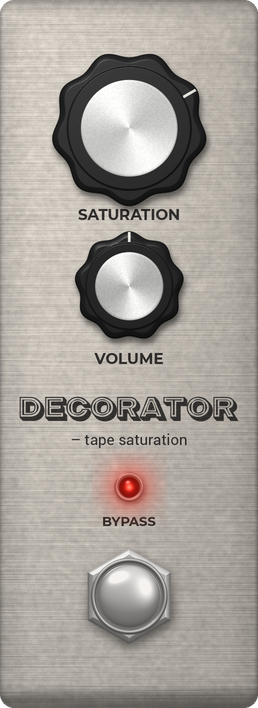

Decorator
Tape saturation built from neural captures of a real stompbox. Press play, then switch between the clean DI and the plugin while the clip keeps playing.
Volume knob at 12:00 for every setting.
Loading demos…
The clean guitar is the FreePATS “Electric Guitar FSBS (direct)” sample bank, an unprocessed DI recording released under CC0. Every clip is rendered through the plugin itself, with nothing else added. The speaker filter is a basic browser high-pass and low-pass, not an amp or cab model. To open this page locally, run python3 -m http.server in docs/.